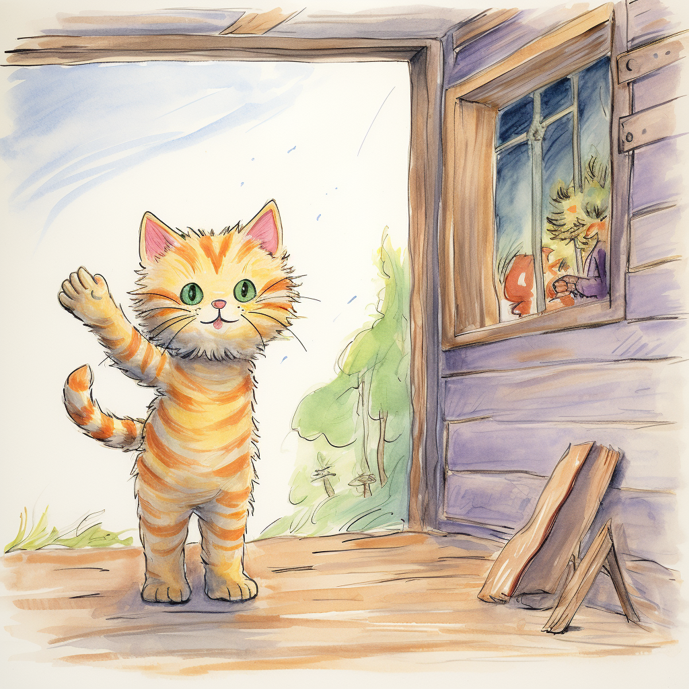

class: right, bottom, white, first-slide, background-black background-image: url(logs.png) background-size: contain # <pre>$ kubectl explain</pre> # <pre>engineering-roles</pre> ## Tomas Tomecek ??? * All of this is specific to Red Hat, me, my team, my experience. * How to make this presentation not boring? --- # `/who "Tomáš Tomeček"` .left-column[ * Sr. Principal Software Engineer @ Red Hat * Log Detective - analyze logs with LLMs * Teaching git with Irina Gulina * Automation, python, integration, RPMs, LLMs, DevConf.cz ] .right-column[ <img src="./tomas.jpg" width="320"> ] --- # What is software engineering? * Solving problems ??? Engineering is all about solving problems. Sorry I meant... --- # What is software engineering? * Solving real problems ??? Solving real problems! -- * Making an impact * Thinking how the code I just wrote affects users ??? It's easy to make impact: we speeded up our internet banking 10x. Also there is a bug in the log in process so you can't access your money. But you can try to log in 10 times faster :) --- # What is software engineering? .left-column[ * Solving real problems * Making an impact * Thinking how the code I just wrote affects users * ...and my colleagues would say how clear the code is ] .right-column[] --- # How does my day look like? -- * Every day is different 😂 ??? And I love that! I'm in control of my work time most of the time. -- * Email, chat, meetings --- # How does my day look like? .left-column[ * Every day is different 😂 * Email, chat, meetings * "Engineering" * Presenting * Planning ] .right-column[] --- class: middle, colossal # The role of a senior engineer is to make more senior engineers. Quote from Mirek Suchy --- class: middle, colossal # How are junior, senior, staff and principal roles different? --- # But first... what are they? * Intern * Junior * Senior * Principal * Staff -- * and 10000 more... --- # How are junior, senior, staff and principal roles different? .left-column[ * Email, chat, meetings * "Engineering" * Presenting * Planning ] .right-column[] ??? Responsibilities and expectations. --- # Senior engineer: what's new for you? * Cross product and cross team collaboration * Leading, teaching and mentoring * A bigger impact * Seniors design, juniors implement * Accountability List by Miro Vadkerti --- class: middle # The end .right-column[  ] .left-column[ * <span class="fa-regular fa-envelope"></span> `Tomas Tomecek <ttomecek@redhat.com>` * <span class="fa-brands fa-github-square"></span> [github.com/TomasTomecek/speaks](https://github.com/TomasTomecek/speaks) * <span class="fa-brands fa-mastodon"></span> [@TomasTomec@fosstodon.org](https://fosstodon.org/@TomasTomec) ] * Some pictures created with DALL-E and midjourney